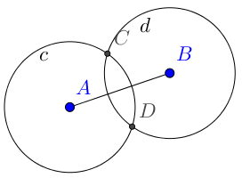
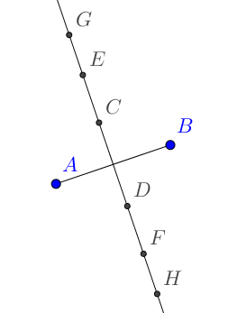

Geogebra en clase
Si el aula dispone de ordenador y cañón, aunque no tenga pizarra digital o esta funcione regular, puede resultar conveniente tener abierto Geogebra para apoyar muchas de las explicaciones o la resolución de algún problema. Nos referimos aquí tanto a esos momentos que se denominan magistrales, donde el profesor directamente explica algún contenido, como a situaciones en donde hay más interacción, como el trabajo en grupos con sus puestas en común. Ambos contextos tienen en común que es el profesor el que guía, de alguna manera, el devenir de la clase.
Dos formas de trazar la mediatriz en Geogebra
La rápida
Geogebra tiene una herramienta que nos permite trazar directamente la mediatriz de un segmento. Esto resulta conveniente cuando el alumnado ya sabe lo que es una mediatriz, para acelerar el proceso de elaboración de las construcciones en Geogebra.
| Geogebra | Discurso |
|---|---|
| Trazamos un segmento de extremos A y B. | |
| Utilizamos la herramienta mediatriz sobre el segmento AB. |
Con significado
Pensemos ahora que queremos introducir el concepto de mediatriz en clase. O que simplemente queremos enfatizar que queremos encontrar todos los puntos que están a la misma distancia de A que de B. Si utilizamos Geogebra para ello, en lugar de la regla y el compás, realizaríamos algo similar a lo siguiente:
| Geogebra | Discurso |
|---|---|
 |
Trazamos un segmento de extremos A y B. |
| Los puntos que están una distancia determinada de A, por ejemplo, a distancia 2, forman la circunferencia c. Esto lo hacemos con la herramienta «circunferencia (centro, radio)». | |
| Los puntos que están una distancia 2 de B forman la circunferencia d. | |
|  | Los puntos de corte de las circunferencias c y d están, por lo tanto, a distancia 2 de A y de B. Los seleccionamos con la herramienta «intersección». |
 |
Repetimos lo mismo con circunferencias centradas en A y B de radios 3 y 4. |
|  | Limpiamos las circunferencias (botón derecho sobre el objeto y dándole a «mostrar objeto» o en el circulito de la vista de objetos de la izquierda) y... ¡eso parece una recta! La trazamos con la herramienta «recta» para comprobar que los puntos están alineados. Hemos construido la mediatriz y hemos visto que está formada por puntos que equidistan de A y de B. |
Sistemas de ecuaciones lineales 2x2
La conexión del álgebra y la geometría pocas veces es tan evidente como en la representación gráfica de sistemas de dos ecuaciones lineales con dos incógnitas. Aunque aquí nos centraremos en ellos, el tipo de discurso es muy similar para otros tipos de funciones. Por otro lado, durante todo el tema de sistemas resulta muy interesante tener el Geogebra abierto para representar los ejercicios y problemas.
| Geogebra | Discurso |
|---|---|
| Resolvamos gráficamente el sistema formado por las ecuaciones e . Comencemos trazando la primera de las rectas. Está formada por todos los puntos que cumplen dicha ecuación. Como, por ejemplo, (0,3). Aquí podemos utilizar la herramienta «punto en objeto» para ir mostrando puntos o, mejor todavía, pedir a la clase que propongan puntos e introducirlos en la barra de entrada para ver si están en la recta. | |
| Trazamos la segunda de las rectas. | |
| El punto de corte de ambas rectas es el único punto que cumple las dos ecuaciones. |